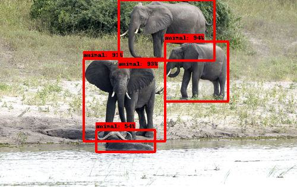
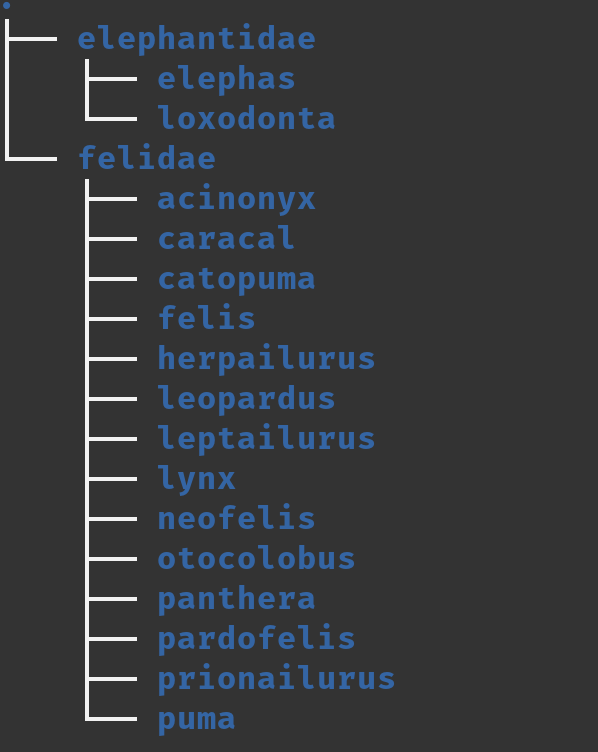

Animal Detector
This repository serves 4 purposes arranged in sequential steps:
-
Download the raw observation images from iNaturalist observations.
-
Execute Mega-detector object detection to identify individual animal instances
-
Crop Mega-detector animal instanced into sub-images
-
Arrange each sub-image into a taxonomic directory structure.
The below headings provide information on how to execute each step, what the process entails, and what the expected output should be. This page provides additional links to the repositories providing the observations data, and the repositories using the resulting data.
Data Origin
Please use the <dataset_name>_train.csv file that is located within the Wildlife Classification
repository. The data is produced as part of the data preparation process. Please consult the README and the documentation of that repository
for further information. The link to the documentation is as follows: https://spatiotemporal-wildlife-classification.github.io/Wildlife-Classification/
1. Download Observations
This process aims to download the observations from the iNaturalist observation urls.
The raw_data_access.py file is responsible for raw image downloads.
Please perform the following steps to download the raw images for an iNaturalist observations CSV file.
- Load the
<observations>.csvfile into theobservations/directory.- In this case, it is the
proboscidia_train.csvfile. This file is available at a public Dataset: https://www.kaggle.com/datasets/travisdaws/spatiotemporal-wildlife-dataset
- In this case, it is the
- Specify the name of the observation file on line 90.
- Execute the file. The progress bar will update you on the status of the download.
Please access the Download Observations Documentation for the documentation.
2. Mega-detector Animal Detection
This process makes use of Mega-detector.
The below documentation is based off the provided instructions in the Mega-detector README file.
To detect and place bounding boxes around individual animal instances within a raw image.
The bounding boxes, serve as the boundaries around which the images are cropped to produce sub-images per observation.
A certainty of 75% is enforced for each animal detection.
Each sub-image has the naming format:
Please note that Mega-detector is capable of detecting animals, vehicles, and humans. In this case we only extract the sub-image if it is the type animal.
Please perform the following steps:
1. Download the MDvA5 file to your computer.
- It must be saved in the following directory: megadetector/ at you home folder.
2. Clone the following repositories into the project. These will replace the empty directories in the project:
angular2html
git clone https://github.com/ecologize/yolov5/
git clone https://github.com/ecologize/CameraTraps
git clone https://github.com/Microsoft/ai4eutils
- Navigate into the
CameraTrapsdirectory and execute the following- Remove the
opencv=4.5.5in theenvs/environment-detector.yml conda env create --file envs/environment-detector.yml
- Remove the
- Activate the virtual environment:
conda activate cameratraps-detector- Add additional package
pip install ultralytics- Add the packages to your Python path:
angular2html export PYTHONPATH="$PYTHONPATH:$HOME/path/to/Animal-Detector/CameraTraps:$HOME/path/to/Animal-Detector/ai4eutils:$HOME/path/to/Animal-Detector/yolov5"Please see the below example:angular2html export PYTHONPATH="$PYTHONPATH:$HOME/Desktop/git_store/Animal-Detector/CameraTraps:$HOME/Desktop/git_store/Animal-Detector/ai4eutils:$HOME/Desktop/git_store/Animal-Detector/yolov5" - Check Mega-detector.
- Navigate into the
CameraTrapsdirectory. - Run the following script to check Mega-detectors output on a single image of your choice:
angular2html python detection\run_detector.py "c:\megadetector\md_v5a.0.0.pt" --image_file "some_image_file.jpg" --threshold 0.1
This should produce a file in the same location with the format dataimages/raw/ directory perform the following:
- Create a file in the project root called bounding_boxes.json
- Execute the following from terminal. Make sure you are in the CameraTraps directory
angular2html
python detection/run_detector_batch.py "$HOME/megadetector/md_v5a.0.0.pt" "$HOME/path/to/Animal-Detector/data/images/raw/" "$HOME/Desktop/git_store/Animal-Detector/bounding_boxes.json" --threshold 0.85 --output_relative_filenames --recursive --checkpoint_frequency 10000
An example is below:
angular2html
python detection/run_detector_batch.py "$HOME/megadetector/md_v5a.0.0.pt" "$HOME/Desktop/git_store/Animal-Detector/data/images/raw/" "$HOME/Desktop/git_store/Animal-Detector/bounding_boxes.json" --threshold 0.85 --output_relative_filenames --recursive --checkpoint_frequency 10000
The object identification labels, and bounding box dimensions are written to the bounding_boxes.json file.
Please note, when wanting to use the Mega-detector functionality, steps 4 and 5 must be repeated.
Please access the Mega-detector Information
Example Mega-detector Use
The below images it the provided raw observation image.

The below image, contains the raw image with object detection applied and illustrated by the red bonding-box. Each bounding-box contains the object detection's certainty of object class. A certainty cut-off of 75% is used in the provided instructions. 
3. Create Sub-images
The detection_cropping.py file is responsible for performing the sub-image cropping process.
The process makes use of the bounding_boxes.json file containing all Mega-detector detections.
The process, converts the provided bounding boxes for the animal category into coordinates within the image.
The images is cropped based on these coordinates. The cropping reduces image resolution.
To combat the loss of resolution Lanzos interpolation and edge sharpening kernels were used to enhance the resulting
sub-image.
Please perform the following steps to crop the images according to the Mega-detector object detections.
1. Ensure steps 1 and 2 are completed and the results are in the specified directories.
2. Simply run the script.
- The resulting cropped images will be placed within the images/cropped/ directory.
Sub-image Example
The images below showcase the original image, followed by the Mega-detector object detections.
The below images showcase the extracted sub-images.
4. Taxonomic Directory Structure
This final step places the sub-images into a directory that mimics the taxonomic structure of the dataset.
This taxonomic structure enables the use of the keras image_dataset_from_directory() method
in the Wildlife Classification
repository. This enables automated image dataset construction and label inference based on the directory structure.
The images are split into training and validation sets. The validation set comprises 15% of the available data.
To create the taxonomic directory structure please follow the below steps:
1. Ensure steps 1-3 are completed and have produced the expected results.
2. Specify the dataset names on line 174. These datasets are what the dataset taxonomic structure is based on.
- Note the names can also be specified one at a time. The result will be the same.
3. Execute the script.
- The output will be in the images/taxon_structured/ directory.
The taxon_train and the taxon_validate directories inside the data/images/taxon_structured should be placed
within the data/images/ directory of the Wildlife Classification repository.
Output
The training and validation datasets organized within the taxonomic structure are used as the training and validation sets of the image classification model training in the Wildlife Classification Repository
For example, the Elephantidae and Felidae training taxonomic directory (to genus level) should resemble: 
Project layout
ai4eutils/ # ai4eutils repository
CameraTraps/ # CameraTraps repository
data/
docs/
yolov5/ # Yolov5 repository
resources/ # Resources for documentation
bounding_boxes.json # Step 2 resulting file
dataset_structure.py # Step 4
detection_cropping.py # Step 3
mkdocs.yml # Documentation configuration
raw_data_access.py # Step 1
README.md